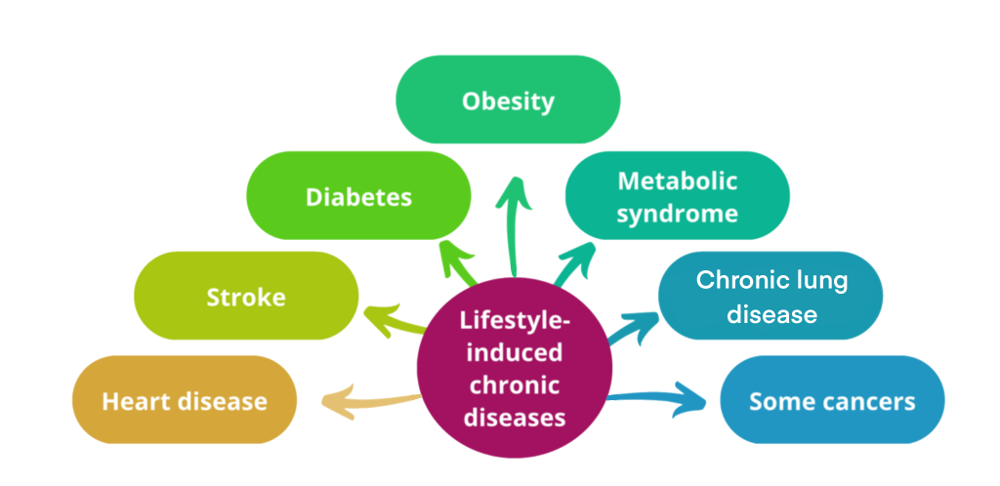

Why Kenyan Weddings Are So Unique
A look at traditions, ceremonies, and modern trends.
Simple explanations of social issues and cultural trends in Kenya.
A look at traditions, ceremonies, and modern trends.
Exploring the reasons behind school dropouts in Kenya.

Why conditions like diabetes and hypertension are increasing.
Exploring how food reflects heritage and identity.
Understanding family structures and values.